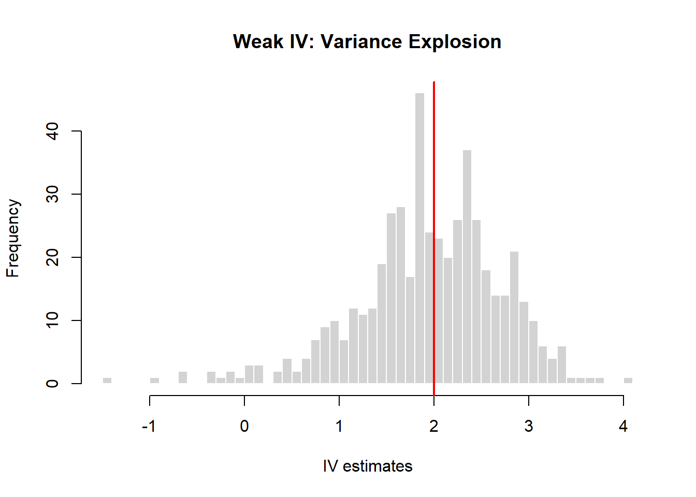

knitr::opts_chunk$set(comment = NA, fig.align = "center")Micro Case 3B: Weak Instruments
1 Introduction
This micro case illustrates the consequences of using weak instruments in instrumental variables estimation.
While instrumental variables can correct for endogeneity, their performance critically depends on the strength of the first stage.
2 Data Generating Process
In this simulation, treatment is endogenous, but the instrument is only weakly correlated with treatment assignment.
set.seed(123)
n <- 2000
# Unobserved ability
ability <- rnorm(n)
# Weak instrument
z <- rbinom(n, 1, 0.5)
# Treatment: weak dependence on z
treat <- 0.3 * z + 0.7 * ability + rnorm(n)
treat <- as.integer(treat > median(treat))
# Potential outcomes
y0 <- 10 + ability + rnorm(n)
y1 <- y0 + 2
# Observed outcome
y <- y0 + treat * (y1 - y0)
case3B <- data.frame(y, treat, z, ability, y0, y1)3 OLS Benchmark
ols <- lm(y ~ treat, data = case3B)
summary(ols)
Call:
lm(formula = y ~ treat, data = case3B)
Residuals:
Min 1Q Median 3Q Max
-4.1293 -0.9127 -0.0046 0.8726 4.2710
Coefficients:
Estimate Std. Error t value Pr(>|t|)
(Intercept) 9.54861 0.04197 227.51 <2e-16 ***
treat 2.96295 0.05935 49.92 <2e-16 ***
---
Signif. codes: 0 '***' 0.001 '**' 0.01 '*' 0.05 '.' 0.1 ' ' 1
Residual standard error: 1.327 on 1998 degrees of freedom
Multiple R-squared: 0.555, Adjusted R-squared: 0.5548
F-statistic: 2492 on 1 and 1998 DF, p-value: < 2.2e-164 Weak First Stage
fs <- lm(treat ~ z, data = case3B)
summary(fs)
Call:
lm(formula = treat ~ z, data = case3B)
Residuals:
Min 1Q Median 3Q Max
-0.54481 -0.45678 -0.00079 0.45519 0.54322
Coefficients:
Estimate Std. Error t value Pr(>|t|)
(Intercept) 0.45678 0.01562 29.247 < 2e-16 ***
z 0.08803 0.02229 3.949 8.1e-05 ***
---
Signif. codes: 0 '***' 0.001 '**' 0.01 '*' 0.05 '.' 0.1 ' ' 1
Residual standard error: 0.4983 on 1998 degrees of freedom
Multiple R-squared: 0.007747, Adjusted R-squared: 0.00725
F-statistic: 15.6 on 1 and 1998 DF, p-value: 8.104e-055 IV with Weak Instrument
We now estimate the causal effect using instrumental variables. Because the model is just-identified, the IV estimator is equivalent to the Wald estimator.
# Wald estimator
wald <- cov(case3B$y, case3B$z) / cov(case3B$treat, case3B$z)
wald[1] 0.9224495# Two-stage least squares
library(AER)
iv_2sls <- ivreg(y ~ treat | z, data = case3B)
summary(iv_2sls)
Call:
ivreg(formula = y ~ treat | z, data = case3B)
Residuals:
Min 1Q Median 3Q Max
-5.12208 -1.16304 0.02414 1.14403 5.29122
Coefficients:
Estimate Std. Error t value Pr(>|t|)
(Intercept) 10.5689 0.4270 24.750 <2e-16 ***
treat 0.9224 0.8508 1.084 0.278
---
Signif. codes: 0 '***' 0.001 '**' 0.01 '*' 0.05 '.' 0.1 ' ' 1
Residual standard error: 1.674 on 1998 degrees of freedom
Multiple R-Squared: 0.2918, Adjusted R-squared: 0.2914
Wald test: 1.176 on 1 and 1998 DF, p-value: 0.2784 6 Variance Explosion with Weak Instruments
Although the IV estimator is consistent, weak instruments can lead to extreme variability in finite samples. To illustrate this, we repeat the experiment many times and examine the distribution of the IV estimator.
set.seed(123)
B <- 500
iv_estimates <- numeric(B)
for (b in 1:B) {
ability <- rnorm(n)
z <- rbinom(n, 1, 0.5)
treat <- 0.3 * z + 0.7 * ability + rnorm(n)
treat <- as.integer(treat > median(treat))
y0 <- 10 + ability + rnorm(n)
y1 <- y0 + 2
y <- y0 + treat * (y1 - y0)
iv_estimates[b] <- cov(y, z) / cov(treat, z)
}
hist(
iv_estimates,
breaks = 40,
col = "lightgray",
border = "white",
main = "Weak IV: Variance Explosion",
xlab = "IV estimates"
)
abline(v = 2, col = "red", lwd = 2)
7 True ATE
mean(case3B$y1 - case3B$y0)[1] 28 Conclusion
This case demonstrates that weak instruments lead to imprecise and potentially misleading IV estimates.
When instruments are weak, IV estimators may perform worse than biased OLS estimators in finite samples.